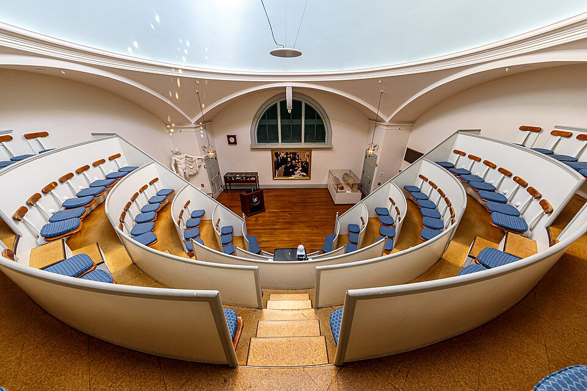

Un dentista duerme al paciente y el bisturí trabaja sin un solo grito
El dentista William Morton adormeció con vapores de éter al joven Gilbert Abbott, y el cirujano John Collins Warren le extirpó un tumor del cuello sin que el enfermo se quejara. El anfiteatro, acostumbrado al alarido, quedó en silencio. «Señores, esto no es una patraña», dijo Warren al terminar.

El anfiteatro quirúrgico del Hospital General de Massachusetts ha visto esta mañana algo que ninguno de los presentes creía posible ver en vida: una operación en silencio. Sobre la mesa, el joven Gilbert Abbott, impresor, con un tumor en el cuello. A su lado, el doctor John Collins Warren, decano de los cirujanos de Boston, bisturí en mano. Y entre ambos, un personaje ajeno al hospital: el dentista William Morton, que llegó con retraso, portando un globo de vidrio con una esponja embebida en un líquido de olor penetrante. El público de médicos y estudiantes, en las gradas, no disimulaba la sorna.
Morton aplicó la boquilla del aparato a los labios del paciente y le hizo aspirar los vapores. En pocos minutos Abbott quedó sumido en un sopor profundo, como de sueño. Warren tomó entonces el bisturí y practicó la incisión: el enfermo no gritó, no se debatió, no hubo que sujetarlo. El cirujano ligó los vasos y extirpó el tumor trabajando con un sosiego que jamás conoció su oficio. Cuando terminó, se volvió hacia las gradas mudas y pronunció las palabras que Boston repite esta noche: «Señores, esto no es una patraña». Nadie recuerda un silencio semejante en aquel anfiteatro.
Hay que decir lo que era la cirugía hasta esta mañana para medir la jornada. Era una tortura consentida: el enfermo, sujetado por ayudantes robustos, aullaba mientras el cirujano trabajaba; la única piedad posible era la velocidad, y la fama de un operador se medía en segundos. Muchos preferían morir de su mal antes que subir a la mesa. Se habían ensayado el opio, el mesmerismo, el gas hilarante, que fracasó con escándalo en esta misma ciudad no hace mucho; se dice que Morton perfeccionó su método en secreto, probándolo en animales y en pacientes de su gabinete dental.
Vuelto en sí, el joven Abbott declaró ante testigos no haber sentido dolor alguno; apenas, dijo, la conciencia confusa de que algo le raspaba el cuello. Los médicos presentes, que habían entrado dispuestos a presenciar una farsa, salieron hablando en voz baja, como quien sale de un templo. El doctor Warren, que lleva medio siglo operando entre alaridos, no ocultaba la emoción. Morton guarda por ahora el secreto de la composición exacta de su preparado, aunque los entendidos afirman que el olor no engaña: sería éter sulfúrico, conocido de las boticas desde hace siglos.
Este diario se anima a escribir lo que esta mañana se pensó en las gradas y nadie se atrevió a decir en voz alta: la medicina acaba de vencer a un enemigo más viejo que todas las guerras. El dolor, ese impuesto que la carne pagaba desde el principio del mundo a toda curación, tiene desde hoy un adversario en una esponja mojada. Quedan por delante las cautelas de rigor: verificar, repetir, medir los riesgos del sopor. Pero si lo de hoy se confirma, el 16 de octubre de 1846 será recordado en la historia del arte de curar. Boston lo supo primero.